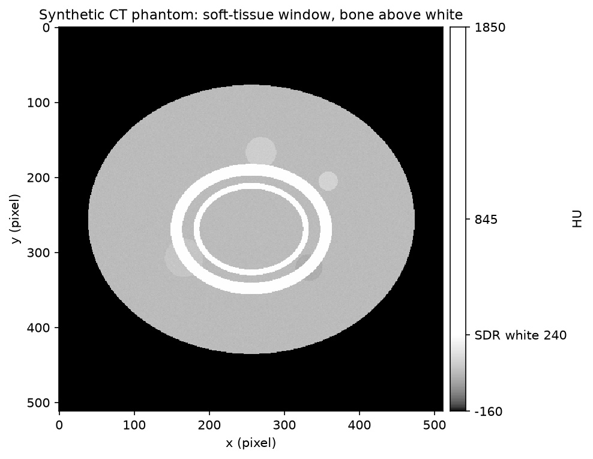
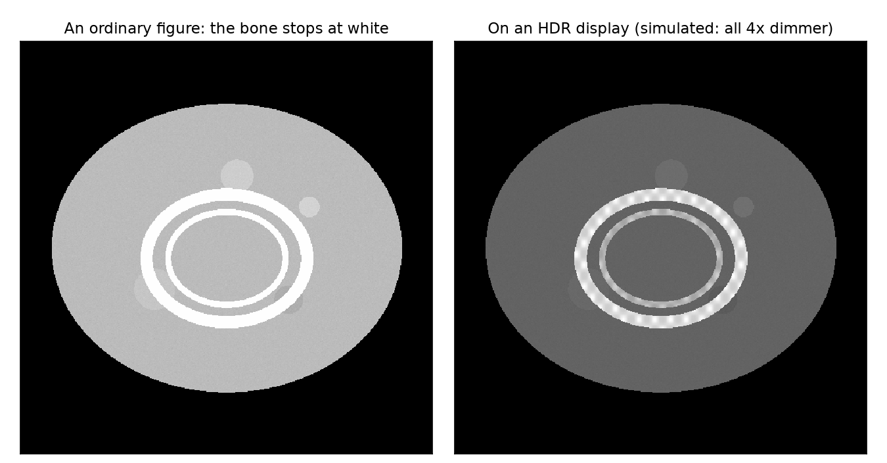
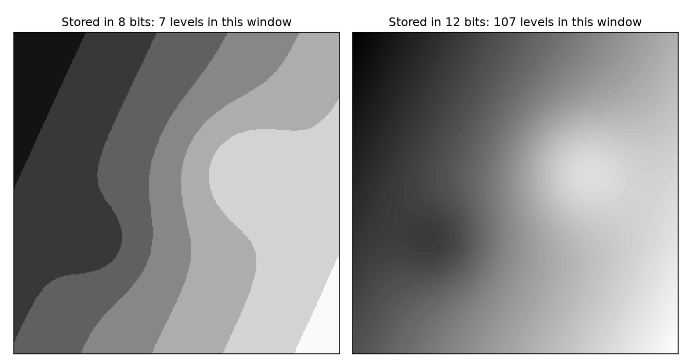
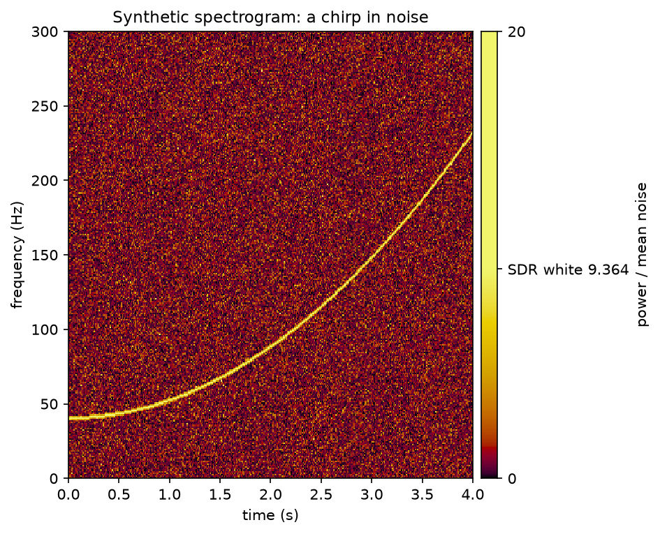
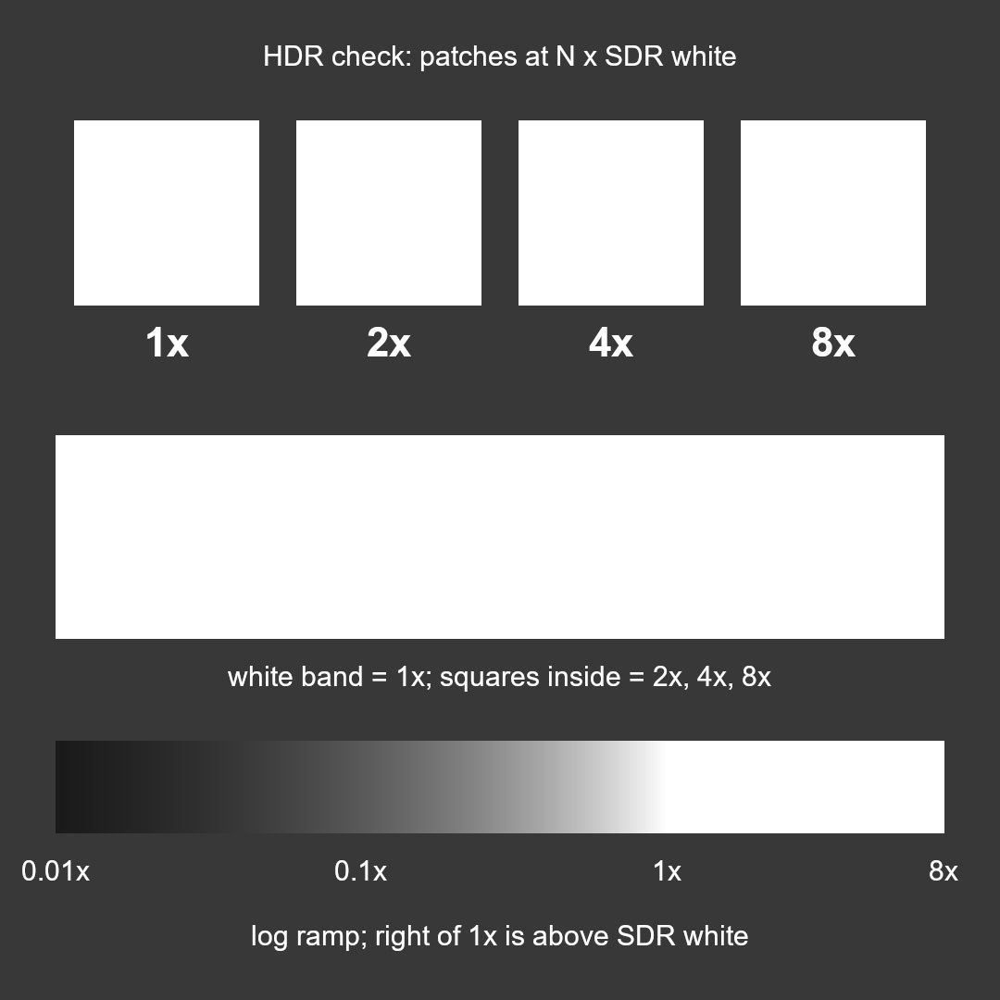

Turning data into light, on the record.
A figure shows less than the data holds. Scientific data carries more range, and finer steps, than an 8-bit figure can — and no figure file says how its data became brightness. UDeep, short for Ultra Deep Range, is a draft standard and a set of tools for figures that declare that mapping, keep it reversible, and remain the ordinary figure on every screen.
Range. An ordinary figure stops at white. On an HDR display — most recent phones, and many laptops — the values above the figure's white appear brighter than white, so one sees what would otherwise be clipped.
Depth. An 8-bit figure has 256 levels. Whether that suffices depends on the data: the file states how large a step in the data one level is, set against the data's own uncertainty, so a reader can tell whether it holds the measurement or only a picture of it.
The ordinary (SDR) version remains the figure of record. HDR adds to it and never replaces it.

What the name means
Ultra Deep Range: more range, and more depth.


Why this, why now
The data has more than the figure shows.
Detectors, cameras and CT record 12 to 16 bits; simulations produce floats. An 8-bit figure stops at white, so every figure chooses between the faint part and the bright part. Radiologists switch between a soft-tissue window and a bone window for exactly this reason.
Most recent phones and many laptops can show brighter than white. Scientific figures are still made as if they can't, just as they stayed in sRGB long after screens went wide-gamut.
Without a convention it arrives as "make it pop": Auto HDR, inverse tone mapping and adaptive boosts that change data silently. Journal image-integrity rules require declared, global processing. A rule written now makes the default safe.
No figure file records how data became brightness. The profile writes that mapping into the file, so the figure can be reproduced and checked.
What it needs
- Evidence. A study of whether HDR helps people read figures. This comes first: so far, model predictions show small gains for Highlight mode, and the stronger Extend result rests on one CT slice.
- Tools. A pip package, then other plotting ecosystems.
- Review. Readers of the draft profile, and device reports from many screens.
- Platform fixes. Decoders that keep precision, gain maps inside SVG files, CSS HDR colours, and HDR in PDF.
- A home in publishing. HDR supplementary figures alongside papers, and a citable version of the profile.
The full picture, with references, is on the evidence page, and short answers to the usual doubts are on the questions page.
The idea
HDR adds to a figure. It never replaces it.
Below the knee, the HDR figure is identical to the SDR figure clipped at the same white. Every conclusion must be readable from the SDR version.
The value placed at white is a physical threshold, a statistical one (a false-alarm level) or a domain preset (a CT window). A percentile is marked exploratory.
Brightness shows where the extreme values are; the colour bar, in data units with "SDR white" marked, says how much.
One mapping for the whole image, written into the file. No local tone mapping, no "Auto HDR". Saturated or clipped pixels never go above white.
Two presets, one curve
The profile's rules are about the data and the mapping. Highlight and Extend are two convenient ways of choosing the knee within those rules. They are presets, not requirements.
Highlight: sparse extremes pop out

- Data
- synthetic: exponential noise power, plus a chirp
- Knee
- the 10⁻⁴ false-alarm level of the noise, 13.3 × the median
- Above white
- 0.9 % of the figure: the chirp, not the noise
Extend: a second range, alongside the first
- Data
- synthetic CT phantom, with 6 HU noise
- Knee
- 240 HU, the top of the soft-tissue window (W400/L40)
- Above white
- 4.0 % of the figure: the bone
Above the knee, the curve keeps rising to the top of the declared range, so every brightness maps back to one data value. One gain-map file adapts itself to each display's headroom.
These two are synthetic. See six real datasets: two gravitational waves, a chest CT, the Sun, a Hubble galaxy and the black hole in M87.
Use it
One line on top of matplotlib.
import udeep.mpl as hp img = hp.imshow(ax, ct, mode="extend", knee=240, stretch={"kind": "linear", "lo": -160, "hi": 1850}, cmap="grey", headroom=4, unit="HU", knee_rule="preset; soft-tissue window") hp.colorbar(img, ax=ax, label="HU") # data units, with "SDR white 240" marked fig.savefig("figure.png") # the ordinary figure, unchanged hp.savefig_hdr(fig, "figure.jpg") # the same figure, plus a gain map
The JPEG opens everywhere. SDR viewers show the ordinary figure; HDR viewers apply the gain up to their own headroom (ISO 21496-1, the Ultra HDR layout). Axes and text stay at SDR white.
Using another tool? See how scientific apps can adopt it: Jupyter, napari, Makie, Fiji, 3D Slicer, ParaView and astronomy viewers.
Install from the repository (a PyPI release is not out yet): pip install "udeep[mpl] @ git+https://github.com/ultradeeprange/udeep". Every public function is listed in the Python reference, and there are worked examples in the repository.
What works today
Measured, not assumed.
Each result comes from a test page with an SDR control and a positive control (run them yourself). The literature, standards and all our results are on the evidence page. So far: one iPhone 16 Pro (Photos and Safari) and one desktop monitor (Edge on Windows 11), September 2026.
| What | Result | Implication |
|---|---|---|
| Gain-map JPEG, 16-bit PNG (PQ), AVIF (PQ/HLG), HEVC video (PQ/HLG) on a web page | shows HDR | Static and moving HDR figures can be shared now. |
| Gain-map JPEG inside inline SVG | shows HDR | Vector axes and text around an HDR data layer. |
Gain-map JPEG inside a standalone .svg file | SDR only | SVG files must carry an HDR-encoded layer (AVIF PQ), which does survive. |
Vector colours above white (rec2100-*, srgb-linear > 1) | not supported | No vector-only HDR yet; declare an SDR fallback. |
| 10/12-bit AVIF ramps vs the same values in 16-bit PNG | AVIF banded, PNG smooth | Some decoders drop precision. Use 16-bit PNG where gradients matter. |
| no portable HDR | The SDR figure is the figure of record. The PDF Association is working on HDR, with JPEG XL. |

Is this screen showing HDR?
Look at the white band.
If you can see squares inside it, your screen and browser are showing HDR. The squares are 2×, 4× and 8× the band's white. If the band is plain white, you are seeing the SDR version, which is exactly the fallback we want.
Judging HDR by eye needs a reference: an HDR figure alone is easy to misjudge. On a phone, use mid brightness and turn Low Power Mode off.
The profile
A draft standard for data-referred figures.
The UDeep Figure Profile is data-first. It covers the data (units, uncertainty, a validity mask), a declared and reversible mapping from value to light, precision judged against the data as well as the eye, the metadata that records all of it, the delivery forms (raster, vector, video, publication), comfort and accessibility, and a device-verification protocol.
It is a working draft, not endorsed by any standards body, and its evidence comes from two devices so far. Comments and device reports are welcome.